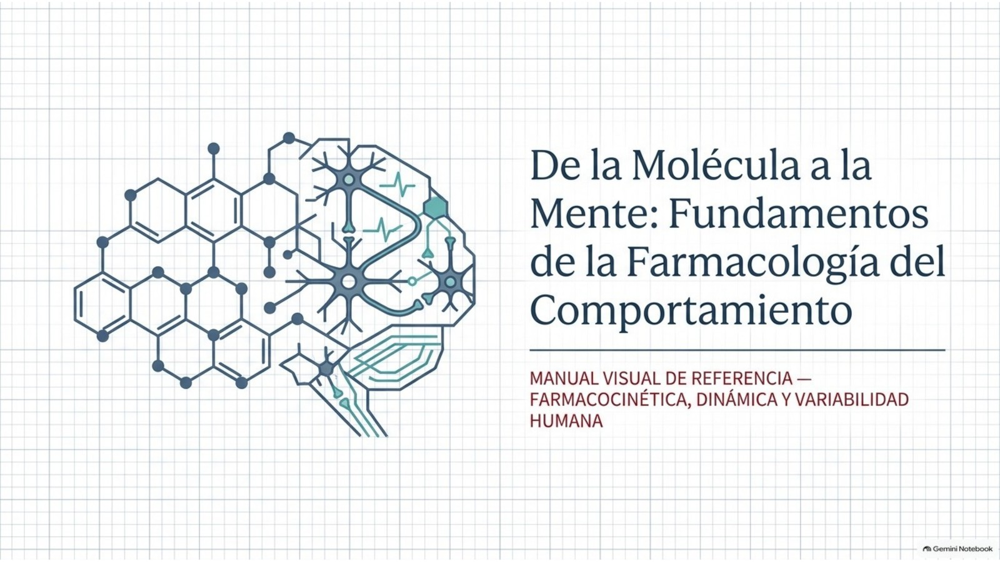

PPTX · 15 diapositivas
De la molécula a la mente
Fundamentos de la farmacología del comportamiento
Manual visual de referencia sobre farmacocinética, farmacodinámica y variabilidad humana. Recorre la ecuación bidireccional entre fármaco y conducta, la diferencia entre concentración y efecto, y las reglas clínicas para leer la variabilidad individual.
Presentación original y versión PDF para lectura.